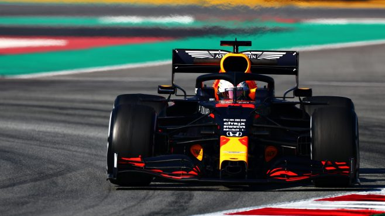

F1 pre-season testing can often throw up more questions than it answers. So, after six days of running at the Circuit de Barcelona-Catalunya, we’ve picked out the five hottest topics doing the rounds at this year's winter tests, and tried to make some sense of it all ahead of the season-opener in Australia.
The onboard cameras fitted to the Mercedes W11 on Thursday morning of Week 1 picked up some weird activity going on in the cockpit, as Lewis Hamilton yanked and pushed on his steering wheel to alter the toe angle of the front wheels – with speculation that the DAS, or Dual Axis Steering system (as it’s known), would help reduce front tyre cooling on the straights, particularly useful at tracks like Sochi, Yas Marina and Baku.
P4 in the constructors’ standings has become a hotly-contested position in recent years, with the midfield teams knowing that finishing ‘best of the rest’ means more prize money, more chances to attract sponsors, and more bragging rights in the pit lane.
We’ve now witnessed the first two weeks of pre-season testing at Barcelona. But who’s looking best-placed in the teams outside of Mercedes, Ferrari and Red Bull to take top honours in the midfield battle – and maybe even be a thorn in those teams’ sides this year?
Cast your vote below to show who you think’s got ‘best of the rest’ written all over them for 2020…
Watch all the on track action from the final day of F1 pre-season testing

The wheels have stopped turning, the shutters have come down on the garages, and the trucks have been packed up. Pre-season testing has finished for another year, after six days of running at the Circuit de Barcelona-Catalunya spread across two weeks.
Friday was the final day of running, and the teams' last chance to gather data and find out how quick – and how reliable – their 2020 challengers are.
Valtteri Bottas finished the day with the quickest time, clocking a 1m16.196s for Mercedes, a tenth up on Max Verstappen in the Red Bull RB16. Check out the video above to see all the highlights from the day – it's the last chance you'll get to see the cars on track before FP1 in Melbourne in two week's time.